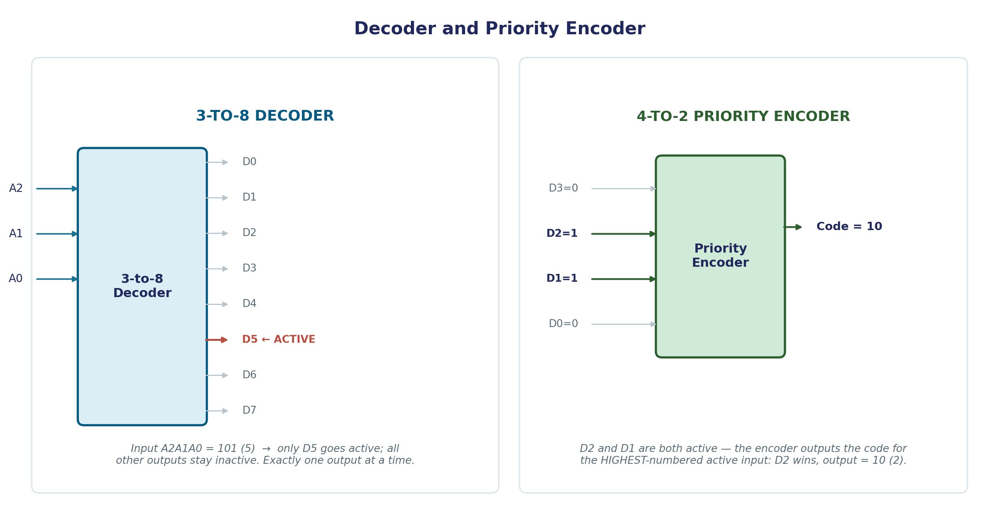
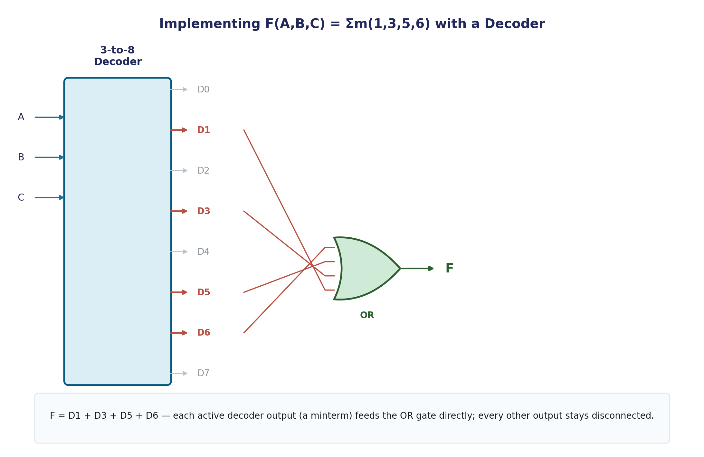

Decoders & Encoders
Decoders and encoders are, in a real sense, inverses of each other — a decoder takes a compact binary code and expands it into one active line among many; an encoder takes one active line among many and compresses it back into a compact binary code. Both are workhorses in real digital systems, from memory addressing to keyboard input.
Decoder
A decoder is a combinational circuit that converts binary information from n input lines into a maximum of 2ⁿ unique output lines — with, at most, one output line active for each valid input combination. An n-to-2ⁿ decoder (also written "n-to-m" where m ≤ 2ⁿ) is fully specified by a truth table where exactly one output column is 1 in each row.
Worked Example — 2-to-4 Decoder
| A1 | A0 | D0 | D1 | D2 | D3 |
|---|---|---|---|---|---|
| 0 | 0 | 1 | 0 | 0 | 0 |
| 0 | 1 | 0 | 1 | 0 | 0 |
| 1 | 0 | 0 | 0 | 1 | 0 |
| 1 | 1 | 0 | 0 | 0 | 1 |
Each output is simply a minterm of the inputs: D0 = A1′A0′, D1 = A1′A0, D2 = A1A0′, D3 = A1A0. This is worth recognizing directly: a decoder is literally a physical implementation of the minterm-generation step from the K-map topic in Unit 1 — each decoder output IS one minterm, realized in hardware.
Worked Example — 3-to-8 Decoder
A 3-to-8 decoder takes 3 input lines (A2 A1 A0) and activates exactly one of 8 output lines (D0–D7), matching the input's binary value.

Input A2A1A0 = 101 (decimal 5) activates only D5 — every other output stays at 0. This "exactly one active line" property is precisely why decoders are the standard building block for memory address selection: each memory chip or memory bank gets wired to one decoder output, guaranteeing only one is ever selected at a time.
Implementing Functions with Decoders
Because each decoder output already IS a minterm, any Boolean function can be implemented by OR-ing together the decoder outputs corresponding to the function's 1-minterms — no additional AND gates needed, since the decoder has already generated every minterm internally.
Worked example: implement F(A,B,C) = Σm(1,3,5,6) — the exact function used as a running example across several Unit 1 pages — using a 3-to-8 decoder. Simply connect an OR gate to decoder outputs D1, D3, D5, and D6:
F = D1 + D3 + D5 + D6

No K-map simplification needed at all — the decoder-plus-OR-gate approach trades gate-minimization effort for a completely mechanical implementation process, at the cost of needing a full decoder (which internally uses more gates than a minimized custom circuit would).
Encoder
An encoder performs the inverse operation: it has 2ⁿ (or fewer) input lines, exactly one of which is active at a time, and produces the n-bit binary code corresponding to which input is active.
Worked Example — 8-to-3 Encoder
If input line D5 is the one that's active (all others 0), the encoder should output binary code 101 (5) on its three output lines. In general, for a simple (non-priority) encoder, each output bit is the OR of every input index that has a 1 in that bit position — e.g., the least significant output bit is 1 whenever D1, D3, D5, or D7 (all the odd-indexed inputs) is active.
The Priority Problem
A plain encoder has a real limitation baked into its design: it assumes exactly one input is active at any time. If two or more inputs happen to be active simultaneously, the OR-based logic above produces garbage — the outputs become the OR of multiple binary codes, which isn't a valid code for either active input.
Priority Encoder
A priority encoder solves this by resolving conflicts: if two or more inputs are active simultaneously, the encoder outputs the code corresponding to the highest-priority input — conventionally, the input with the highest index.
Worked Example — 4-to-2 Priority Encoder
Inputs D3, D2, D1, D0 with priority given to the highest index. Suppose D2 = 1 and D1 = 1 simultaneously (D3 = D0 = 0):
Since D2 has higher priority than D1, the encoder outputs the code for D2: binary 10 (2) — completely ignoring that D1 is also active. D1's activity is simply irrelevant to the output as long as any higher-priority input (D2 or D3) is active.
Common Pitfalls
- A decoder's outputs are mutually exclusive by design — at most one output is active for any valid input combination; if a decoder circuit shows two outputs active simultaneously, there's a wiring or logic error.
- A plain (non-priority) encoder silently fails when multiple inputs are active — it will produce an output, but that output is not a meaningful code for either active input. Real hardware almost always needs the priority version.
- "Priority" conventionally means the highest input index wins, not the lowest — verify this convention explicitly rather than assuming.
Applications
- Memory address decoding: the address bus feeds a decoder, and each decoder output selects exactly one memory chip or memory bank — this is the single most common real-world use of decoders in computer organization.
- Keyboard encoders: when a key is pressed, a priority encoder converts "which key is physically active" into a compact binary scan code — and the priority mechanism resolves the case where a user's finger briefly grazes two keys at once.
- Interrupt controllers in a CPU use priority encoders to decide which of several simultaneous interrupt requests gets serviced first — exactly the same priority-resolution logic as the keyboard example, applied to a different problem.